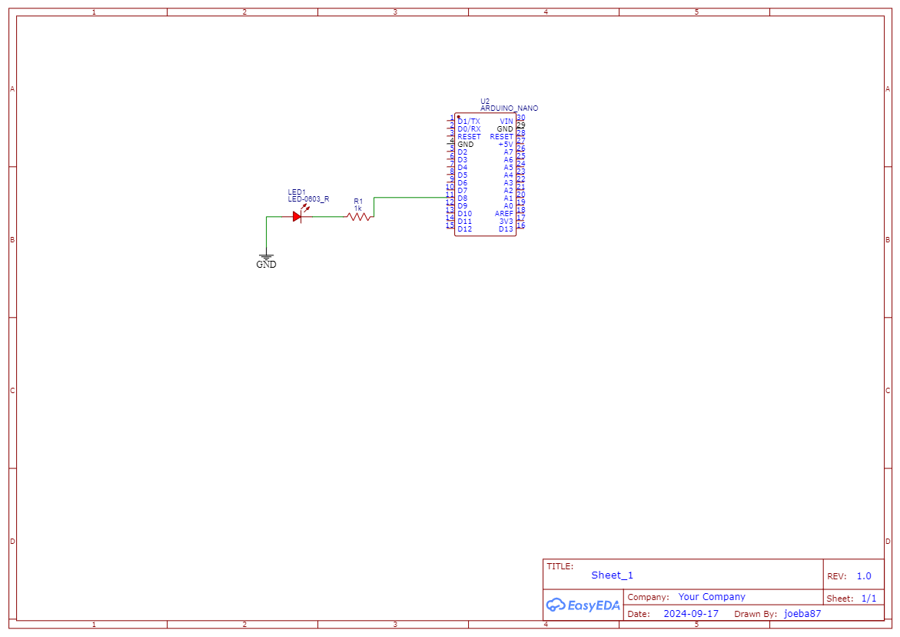

How to get started with Engineering | Hello World Example
In this lesson, we will implement our first Arduino Project: our very own Hello World example!!
Required Materials:
- Arduino Board (with USB cable)
- Breadboard
- Male-Male Jumper Wires
- Arduino IDE
- 1 LED
- 1 1K Ohm Resistor
Here is how this will work, this program will print out “Hello, World” and blink an LED every 1 second.
Please get out your breadboard and the required components above from your Elegoo Kit and wire the below diagram:

As you can see, the Arduino pin 8 connects to a resistor, which is connected to an LED. How this works is that electrons from the negative pin will flow through the resistor and LED only if the Arduino Pin 8 is open, or has a positive charge. Because if it doesn’t, then there will be no charge potential, thus the electrons won’t flow. At a microscopic level, what is going on is a transistor is opening its gate, allowing electrons to flow, thus eluminating the LED. This function is controlled by binary code, that is processed in some central processing unit in the chip.
Below, is the code which I will be using, please try to follow along with your own Arduino IDE. Unfortunetly, I cannot go through teaching programming in this course, but I will try to explain everything as I go along. But, I highly suggest you check out this Arduino Refrence to get in depth knowledge of C++.
When I first started to learn the Arduino Programming language, I kept a journal of various functions or names, and every day my goal was to learn five new “names”. I tried to memorize all the symbols and what they meant, but I later figured out that it is much faster to learn programming while applying it and programming along with a tutorial, not trying to memorize every function or symbol. So if you are worried you don’t understand how C++ works, don’t worry! Just try your best to understand/follow along.
// defines a comment
int ledPin = 8; // defines an integer variable names ledPin
String outputString = "Hello, World"; // defines a string (a bunch of characters) variable, named output String
int delayTime = 1000; // defines an integer (called int) variable, named delayTime
void setup() {
Serial.begin(9600); //Start the serial communication protocol
pinMode(ledPin, OUTPUT);
digitalWrite(ledPin, LOW);
Serial.println("Starting program...");
}
void main() {
Serial.println(outputString);
digitalWrite(ledPin, HIGH);
delay(delayTime);
Serial.println(outputString);
digitalWrite(ledPin, LOW);
delay(delayTime);
}
First, I declare three variables to be used in the program:
int ledPin = 8;
String outputString = "Hello, World";
int delayTime = 1000;
Then I initialize some “setting” in a part of the program that will only run once, the setup() function:
void setup() {
Serial.begin(9600); //Start the serial communication protocol
pinMode(ledPin, OUTPUT);
digitalWrite(ledPin, LOW);
Serial.println("Starting program...");
}
This program doesn’t loop, and it runs once, at the beginning of the program. However, the main() function will loop indefinitely until the Arduino looses power:
void main() {
Serial.println(outputString);
digitalWrite(ledPin, HIGH);
delay(delayTime);
Serial.println(outputString);
digitalWrite(ledPin, LOW);
delay(delayTime);
}
the above code will blink the LED to infinity!
the pinMode() function sets the pin we want to use and how we want to use it, either INPUT or OUTPUT. And the key function that allows us to do this blinking is digitalWrite() which takes in an integer for the pin number and whether it needs to go HIGH or LOW (can also use 1 or 0). The delay happens with the delay() function, which takes in milliseconds to stop execution for that period of time.
So that’s interesting right?
Compare how easy this is to making an electronic circuit to blink an LED manually!
Experimentation
I want to you go in and manually and adjust the time between blinks, if necessary, use the delayMicroseconds() function to get smaller intervals. Once you get to a small enough number, you shouldn’t be able to see a blink! WHY is this?
PWM (Pulse Width Modulation)
Modifying the amount of time between a signal can be referred to as PWM (Pulse Width Modulation) because we are modifying (or modulating) the width (or the amount of time the pulse/signal is sent).
This concept of PWM is actually how all modern computers work; they use PWM on computer screens or smartphones to adjust the brightness, and refresh the screen (and others).
So what this does is two fold. First, it blinks so fast, that our eyes cannot see it blink, so it just looks constantly on. Can you see how we could use this to “adjust” the brightness of the LED by using PWM?
The answer is simple, just adjust the ratio the LED stays on to how long it stays off when doing PWM. So in the code above, you might want to have the first delay be a little bit longer than the second one, which will make it seem brighter compared to the second one being off longer.
Serial Monitor
The next and final part of this is viewing print statements in the Arduino IDE. So, as you saw in the code, I used the built-in Serial library to access the serial monitor from the Arduino. I first initialize it at a baud rate (basically how fast we communicate):
Serial.being(9600);
So now in the loop, to print out a string, you can run the below function:
Serial.println(outputString);
here, we call the println() function from the Serial class. To prove that this works, you can open the Serial Monitor by clicking the Serial Monitor button in the top right corner.
This was quite a simple example, which is why it is often referred to as the Hello World Example. I hope this got you excited to learn more about Engineering with Arduino!!
See you next time!!
Subscribe to Burak Ayyorgun
Get the latest posts delivered right to your inbox